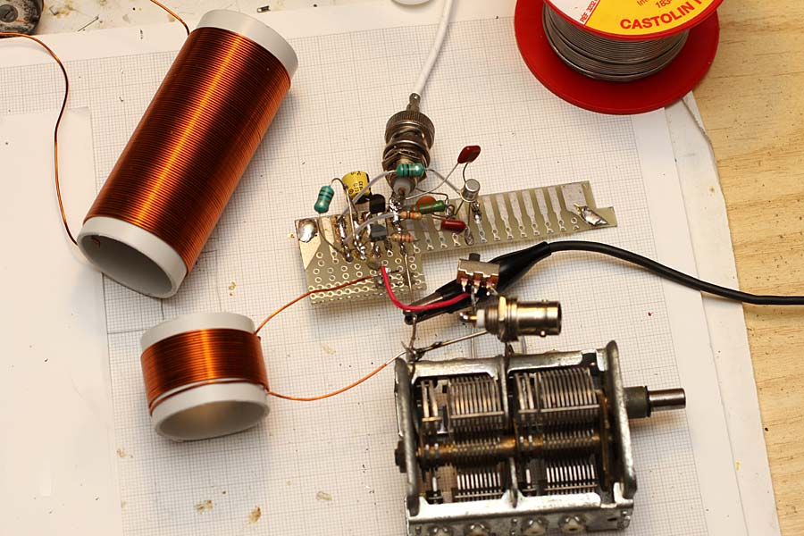
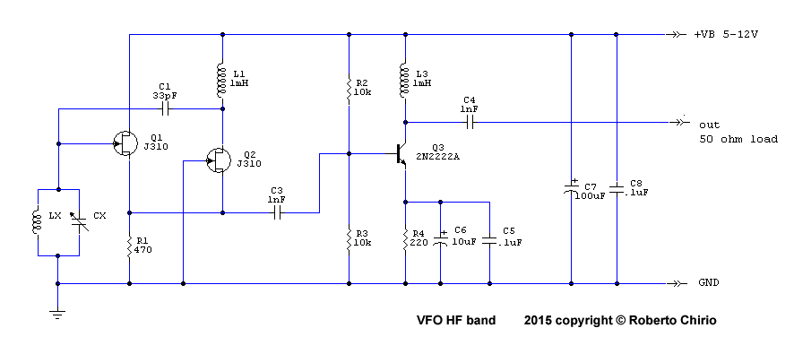
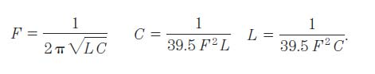
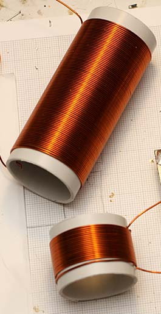
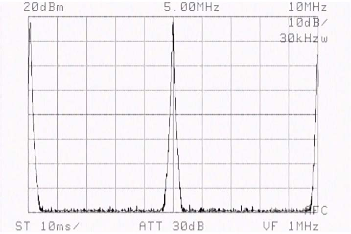
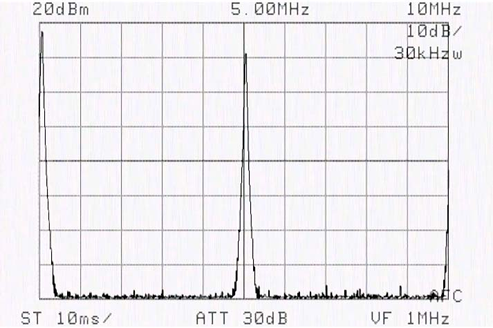
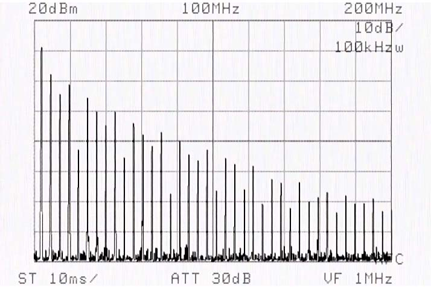

Radio & antennas
VFO RF Generator 100 kHz - 30 MHz
Simple VFO RF generator, HF band.
Page index
Premise
July 2015
This circuit is an RF generator with variable frequency. The field of use ranges from VLF to over 50 MHz.
The circuit is very simple to build using traditional discrete components, which can be easily found or even recovered from old boards or at the bottom of the laboratory drawer.
The oscillator is a tuned circuit composed of an inductor and capacitor which determine the oscillation frequency. Two FETs in cascade make up the active part of the variable oscillator. The configuration is little known but has frequency stability that is to say exceptional; in steady state the frequency variation is a few Hz/MHz close to a quartz oscillator. Important are a stable power supply and the use of quality components.
Let's say the frequency is not affected by changes in supply voltage, voltage is important if you want to get maximum output power which at 12 V exceeds 100 mW on 50 ohm load.

This is the prototype on breadboard of the VFO generator; the 20-turn coil is connected, alongside the 90-turn one; the components and circuit are optimized to get maximum output power with a single RF transistor type 2N2222A; Varicaps can be used instead of the variable capacitor. The whole thing must be mounted inside a box, even non-metal, leaving space for the coils.
Circuit diagram

- The circuit can be powered from 5V to 12V. It still works reasonably well down to 2.4V.
- The tuned circuit is composed of a variable capacitor and a tuning coil, with just three types of coils it is possible to cover frequencies from 100 kHz to 30 MHz (see table below for component values).
- With 12V power supply, the FET oscillator stage provides at output a power of about 2mW equal to 0dBm.
- The stage made up of 2N2222A has the function of decoupling the oscillator from the output and amplifying the signal by 15-20 dB bringing the output to +18 dBm under optimal conditions on 50 Ohm load
- With 12V power it is advisable to always have a 50 ohm load on the output as when unloaded the transistor Q3 heats up a lot.
- L1 and L3 are 1mH inductors but to go below 500 kHz it is advisable to increase the value up to 10mH to avoid reductions in the output signal value.
- Variable capacitor CX I used an old air-variable dual section for AM 350+350pF connected in parallel or single section for higher frequencies.
....
Frequency as a function of LX + CX values
Range
LX
CX
100 kHz - 1 MHz
150 turns
350+350 pF + 1nf
200 kHz - 2.7 MHz
90 turns
350+350 pF + 470pf
2.0 MHz - 8.0 MHz
20 turns
350pF (1 section)
6.0 MHz - 30 MHz
6 turns
350pF (1 section)
The formula for calculating parallel resonance is as follows:

Where F is in Hertz, C in Farads and L in Henrys
Construction of tuning coils.
- For good stability in the oscillator the tuning coils must have a high "Q", they must therefore be made with a size to have low resistance.
- In the test three windings were made to cover frequencies from 200 kHz to 30 MHz.
- For lower frequencies 90 turns of wire diam. 0,45 on diameter 32mm. It is possible to reach 150 turns to go down to 100 kHz.
- Intermediate frequencies obtained with 20 turns on diam. 32mm
- Frequencies up to 30 MHz with 6 turns on diameter 32mm.
- A single coil of 90, or better 150 turns with taps at the 6th and 20th turn can reduce dimensions in case of insertion in final enclosure, a changeover switch will allow you to insert the desired coil section.
For convenience the variable capacitor remains the same for all frequencies, capacitors are added in parallel to go to lower frequencies.

Output signal

This is the 5 MHz signal present at the output, we get 16.5 dB at 12V supply.

This is the 5 MHz signal present at the output, we get 12 dB at 5V supply.

Here you can see very well, the repetition of harmonics one every 5 MHz, for a fixed output frequency without harmonics it is good to adopt a three-section low-pass filter, tuned to the frequency needed.
Applications
For beginners without a generator, the RF VFO generator is useful in many cases, it serves to test the receiver input to verify the operating band, to apply the signal to a receiver input it is necessary to reduce the signal to -90 dBm values via an attenuator or even just a noninductive resistive divider.
By applying the output signal to an antenna, internal or external, it is possible to radiate the generated signal, you always need an antenna tuned for 50 ohm load to avoid stressing the amplifier transistor.
By adding a further amplifier stage or more amplifier stages it is possible to easily reach 1, 10W at the output already sufficient for a CW transmission activity.
It is easy to modulate the signal via the audio output of a PC thus creating a transmitter for voice or music, entering for example on an old tube radio in the Medium Wave band or shortwave band.
© Roberto Chirio: all rights reserved.